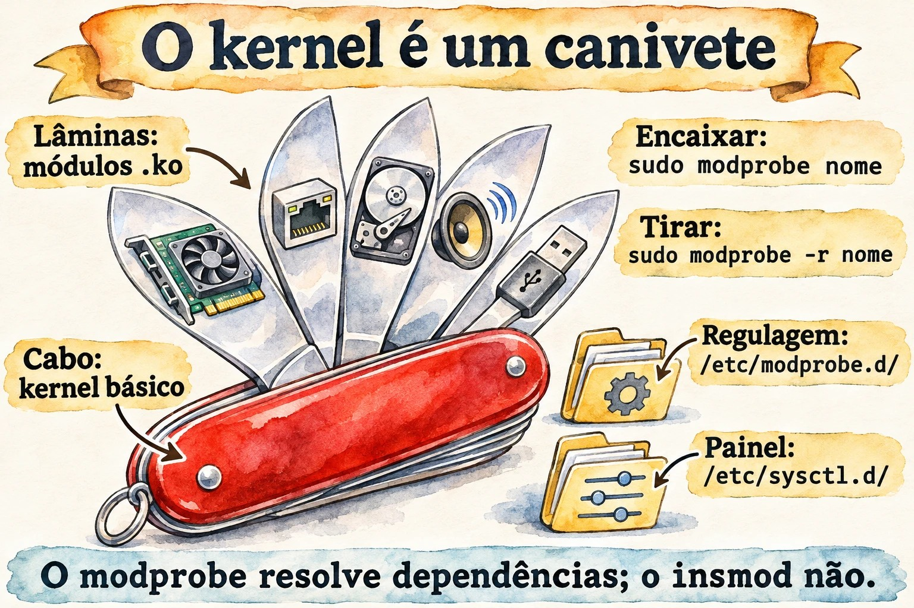
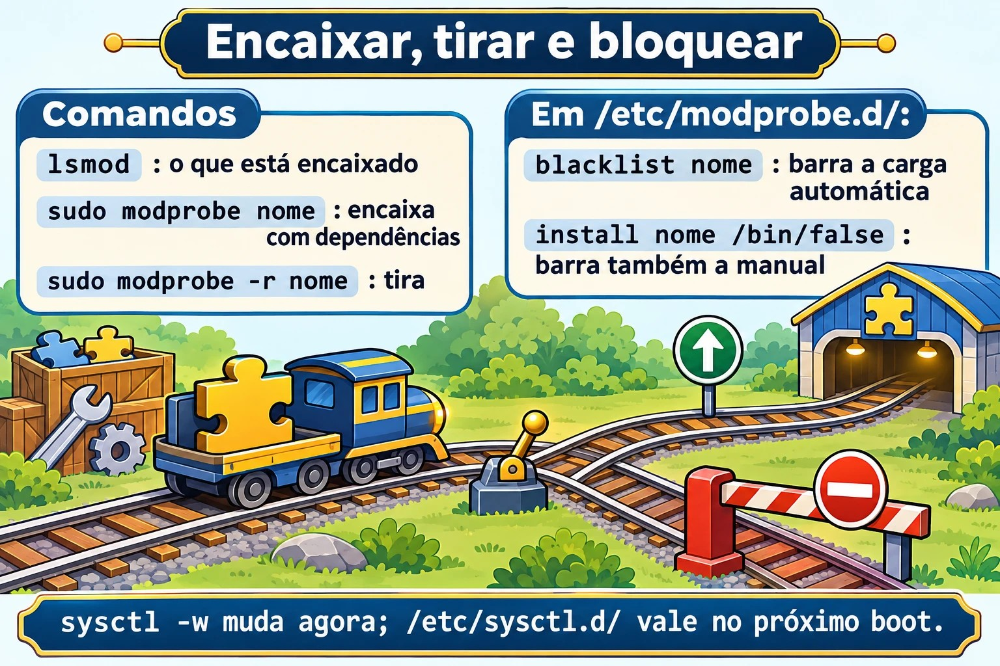

Aula 5.2 · Módulos e parâmetros
Na 5.1 você viu que cada peça de hardware precisa de um driver, e que muitos drivers são módulos: pedaços do kernel carregados quando são necessários. Nesta aula você aprende a listar, carregar, descarregar, configurar e bloquear módulos. Também aprende a mudar o comportamento do kernel em funcionamento com o sysctl, e a fazer a mudança sobreviver ao reboot.
Núcleo desta aula:
lsmod,modinfo,modprobeemodprobe -r; os arquivos em/etc/modprobe.d/(opções e blacklist) e em/etc/modules-load.d/(carregar no boot);sysctlesysctl -w; e os arquivos em/etc/sysctl.d/aplicados comsysctl --system. O resto é aprofundamento.
| Ficha | |
|---|---|
| Módulo | M5 · Hardware, kernel e virtualização, aula 2 de 3 |
| Quando | Semana 9 |
| Semana | 9 |
| Tempo | 2 h a 2 h 30 |
| VMs | rocky-lab (201) e debian-lab (202) |
| Antes | Snapshot m5a2-inicio nas duas |
1 Aquecimento
Responda sem pesquisar. As respostas estão no Gabarito.
- Para trocar o driver de uma placa de rede, é preciso recompilar o kernel?
- Um valor mudado com
sysctl -wsobrevive ao reboot? - Se você colocar um módulo na blacklist, ainda dá para carregá-lo à mão?
2 Por que importa
| Situação real | O que você faz com esta aula |
|---|---|
| Um driver de placa trava o servidor depois de uma atualização | Bloqueia o módulo e usa outro, sem recompilar nada |
| O firewall precisa rotear pacotes entre duas redes | Liga o net.ipv4.ip_forward de forma permanente |
O banco de dados pede vm.swappiness baixo e mais arquivos abertos | Ajusta os parâmetros num arquivo em /etc/sysctl.d/ |
Uma auditoria pede que o usb-storage fique desligado | Bloqueia o módulo de verdade, e não só com blacklist |
3 Modelo mental
Pense no kernel como um canivete suíço com lâminas de encaixe:
- O cabo é o kernel básico, que sobe no boot.
- Cada lâmina é um módulo, um arquivo
.koem/lib/modules/$(uname -r)/. Você encaixa (modprobe) e tira (modprobe -r) com o canivete aberto. - Algumas lâminas precisam de outras para funcionar: são as dependências. O
modprobeencaixa as duas, e oinsmodnão. - Cada lâmina tem regulagens, que são os parâmetros do módulo. Você as escolhe ao encaixar ou deixa anotadas em
/etc/modprobe.d/. - O
sysctlé o painel de regulagens do cabo: o comportamento geral do kernel, como rede, memória e segurança. Ele aparece como arquivos em/proc/sys/.


4 O essencial
Ver os módulos
uname -r # versão do kernel em uso
lsmod # módulos carregados, tamanho e quem os usa
lsmod | grep virtio
sudo modinfo virtio_net # arquivo, descrição, licença, dependências, parâmetros
sudo modinfo -p e1000 # só os parâmetros
ls /sys/module/virtio_net/parameters/ # valores em uso agoraNo lsmod, a coluna Used by diz quantos usuários e quais módulos dependem daquele. Um módulo em uso não pode ser descarregado.
Carregar e descarregar
| Comando | Faz | Observação |
|---|---|---|
modprobe nome | Carrega o módulo e as dependências | O jeito certo |
modprobe nome opcao=valor | Carrega com um parâmetro | Vale até descarregar |
modprobe -r nome | Descarrega o módulo e as dependências que ficarem sem uso | Falha se estiver em uso |
insmod /caminho/arquivo.ko | Carrega um arquivo, sem resolver dependências | Vale reconhecer; quase nunca se usa |
rmmod nome | Descarrega um módulo só | Vale reconhecer |
depmod -a | Recalcula as dependências em modules.dep | Os pacotes de kernel já rodam |
Configurar de vez
| Arquivo | Para quê | Exemplo de linha |
|---|---|---|
/etc/modprobe.d/*.conf | Opções padrão de um módulo | options dummy numdummies=2 |
/etc/modprobe.d/*.conf | Impedir a carga automática | blacklist dummy |
/etc/modprobe.d/*.conf | Impedir qualquer carga | install dummy /bin/false |
/etc/modules-load.d/*.conf | Carregar no boot | uma linha só com dummy |
A diferença entre blacklist e install ... /bin/false é a armadilha mais comum. A blacklist só impede que o módulo seja carregado sozinho, quando o hardware aparece. Um modprobe à mão, ou outro módulo que dependa dele, ainda o carrega. Para bloquear de vez, use as duas linhas.
Se o módulo entra no initramfs, a mudança só vale no próximo boot depois de regenerar o initramfs: dracut -f na Rocky e update-initramfs -u na Debian. Você viu os dois na 4.1.
sysctl: as regulagens do kernel
sudo sysctl -a | wc -l # centenas de regulagens
sudo sysctl net.ipv4.ip_forward # ler uma
cat /proc/sys/net/ipv4/ip_forward # o mesmo valor, como arquivo
sudo sysctl -w vm.swappiness=10 # mudar agora, até o rebootO nome com pontos corresponde ao caminho em /proc/sys/, com barras: net.ipv4.ip_forward é o arquivo /proc/sys/net/ipv4/ip_forward.
Para a mudança ficar, crie um arquivo em /etc/sysctl.d/, terminado em .conf:
echo 'vm.swappiness = 10' | sudo tee /etc/sysctl.d/90-lab.conf
sudo sysctl --system # aplica todos os arquivos, na ordem, e mostra cada umOs arquivos são lidos em ordem alfabética, e o último valor vence. Por isso os nomes começam com número. No boot, quem aplica é o systemd-sysctl.service.
Rocky × Debian
| Item | Rocky | Debian |
|---|---|---|
| Módulos | /lib/modules/$(uname -r)/, arquivos .ko.xz | /lib/modules/$(uname -r)/, .ko ou comprimidos, conforme a versão |
| Regenerar o initramfs | sudo dracut -f | sudo update-initramfs -u |
/etc/sysctl.conf | Existe, mas o recomendado é o /etc/sysctl.d/ | Nas versões novas pode nem existir. Use o /etc/sysctl.d/ |
| Padrões do sistema | /usr/lib/sysctl.d/ | /usr/lib/sysctl.d/ |
5 Lab guiado
O módulo de treino é o dummy. Ele cria placas de rede de mentira, não depende de hardware e não atrapalha nada se der errado.
Passo 0 · Snapshot e pasta
No nó Proxmox:
qm snapshot 201 m5a2-inicio
qm snapshot 202 m5a2-inicioEm cada VM:
mkdir -p ~/lab52 && cd ~/lab52Passo 1 · Conhecer o que está carregado
Nas duas VMs:
uname -r
lsmod | wc -l
lsmod | head -15
lsmod | grep -E 'virtio|scsi'
sudo modinfo virtio_net | grep -E '^(filename|description|depends|parm)'
sudo modinfo dummy | grep -E '^(filename|description|parm)'Anote em ~/lab52/notas.txt: quantos módulos cada VM tem carregados, em que arquivo fica o dummy, e qual parâmetro ele aceita.
Passo 2 · Carregar, usar e descarregar
lsmod | grep dummy # nada
sudo modprobe dummy
lsmod | grep dummy
ip -br link show type dummy # apareceu dummy0
sudo modprobe -r dummy
ip -br link show type dummy # sumiuAgora, com um parâmetro:
sudo modprobe dummy numdummies=3
ip -br link show type dummy # dummy0, dummy1 e dummy2
cat /sys/module/dummy/parameters/numdummies
sudo modprobe -r dummyPasso 3 · Deixar de vez
echo 'options dummy numdummies=2' | sudo tee /etc/modprobe.d/lab-dummy.conf
echo 'dummy' | sudo tee /etc/modules-load.d/lab-dummy.conf
sudo systemctl rebootDepois do reboot:
ip -br link show type dummy # dummy0 e dummy1, sem você fazer nada
systemctl status systemd-modules-load --no-pagerQuem carregou foi o systemd-modules-load.service, que lê o /etc/modules-load.d/. As opções vieram do /etc/modprobe.d/.
Decida 1
Acrescente uma blacklist e tente carregar à mão:
echo 'blacklist dummy' | sudo tee /etc/modprobe.d/lab-bloqueio.conf
sudo modprobe -r dummyAntes de rodar sudo modprobe dummy, responda: o que acontece?
- A) O módulo carrega normalmente.
- B) O
modproberecusa, porque o módulo está na blacklist. - C) O módulo carrega, mas sem as opções do
lab-dummy.conf.
Marque uma opção antes. Depois rode sudo modprobe dummy e ip -br link show type dummy.
| Se você marcou | Resultado | Por quê |
|---|---|---|
| A | Acertou | A blacklist só impede a carga automática pelo apelido do hardware. Um pedido explícito passa |
| B | Errou | É o que quase todo mundo espera, e por isso pega gente em auditoria |
| C | Errou | As opções continuam valendo: aparecem dummy0 e dummy1 |
Agora bloqueie de verdade:
echo 'install dummy /bin/false' | sudo tee -a /etc/modprobe.d/lab-bloqueio.conf
sudo modprobe -r dummy
sudo modprobe dummy # agora falha
echo $?Para fixar: para desligar um módulo numa auditoria, use blacklist e install nome /bin/false. Se ele estiver no initramfs, regenere o initramfs.
Passo 4 · sysctl
sudo sysctl vm.swappiness net.ipv4.ip_forward
cat /proc/sys/vm/swappiness
sudo sysctl -w vm.swappiness=10
cat /proc/sys/vm/swappinessDecida 2
Você mudou o vm.swappiness com sysctl -w e não criou nenhum arquivo. Depois do reboot, qual é o valor?
- A) Continua 10.
- B) Volta ao padrão da distro.
- C) Fica 0, porque o valor foi perdido.
Marque uma opção antes. Depois reinicie e confira com sysctl vm.swappiness.
| Se você marcou | Resultado | Por quê |
|---|---|---|
| A | Errou | O sysctl -w muda só a memória do kernel em funcionamento |
| B | Acertou | No boot, valem os padrões do kernel e os arquivos em sysctl.d. Na Rocky, o tuned pode ter seu próprio padrão, como 30 no perfil de VM |
| C | Errou | Nada se perde: o kernel começa do padrão de novo |
Agora deixe de vez:
echo 'vm.swappiness = 10' | sudo tee /etc/sysctl.d/90-lab.conf
sudo sysctl --system | tail -5
sudo systemctl rebootDepois do reboot, sysctl vm.swappiness mostra 10.
Para fixar: sysctl -w serve para testar. Para valer de vez, use um arquivo em /etc/sysctl.d/ e o sysctl --system.
6 Quebre e conserte
Nesta quebra, há dois problemas ao mesmo tempo. Na rocky-lab, o lab-bloqueio.conf já impede o dummy, mas o modules-load.d ainda pede para carregá-lo no boot. Acrescente também um erro de digitação no sysctl:


echo 'vm.swapiness = 20' | sudo tee /etc/sysctl.d/91-lab-erro.conf
sudo systemctl rebootDepois do reboot, investigue sem olhar o conserto:
systemctl --failed
journalctl -b -u systemd-modules-load --no-pager
sudo sysctl --system 2>&1 | grep -i -E 'error|cannot|invalid'O systemd-modules-load deve reclamar que não conseguiu inserir o dummy, e o sysctl --system deve dizer que não existe /proc/sys/vm/swapiness. Os dois são comuns: alguém bloqueia um módulo e esquece quem pedia por ele, ou digita um parâmetro errado e nunca confere.
O conserto:
sudo rm /etc/modules-load.d/lab-dummy.conf
sudo rm /etc/sysctl.d/91-lab-erro.conf
sudo systemctl reset-failed
sudo systemctl restart systemd-modules-load
sudo sysctl --system | grep -i swap
systemctl --failedA lição: depois de mexer em modprobe.d, modules-load.d ou sysctl.d, rode o sysctl --system e olhe o systemctl --failed antes de ir embora.
7 Armadilhas
- Achar que a blacklist bloqueia. Ela só impede a carga automática. Para bloquear, use também
install nome /bin/false. - Esquecer o initramfs. Um módulo de disco ou de rede carregado no initramfs ignora a mudança até você rodar
dracut -fouupdate-initramfs -u. - Usar
sysctl -we esquecer o arquivo. Funciona hoje e some no próximo reboot, justo quando ninguém lembra mais. - Editar o
/usr/lib/sysctl.d/. É do pacote, e a atualização sobrescreve. O seu lugar é/etc/sysctl.d/. - Arquivo sem
.confno fim. Osysctl.d, omodprobe.de omodules-load.dignoram arquivos com outra extensão. - Na Rocky, esquecer o
tuned. Ele também mexe em parâmetros do kernel. Por padrão, ele reaplica os seus arquivos desysctl.ddepois, mas confira comtuned-adm activequando um valor não bater. - Descarregar o módulo da placa de rede por SSH. A sessão cai junto. Faça pelo console.
8 Quiz
- Qual a diferença entre
modprobeeinsmod? - Qual a diferença entre
blacklist dummyeinstall dummy /bin/false? - Onde se coloca um módulo para ser carregado no boot?
- Como deixar
vm.swappiness = 10permanente e aplicar sem reiniciar? - Que arquivo em
/proc/sys/corresponde anet.ipv4.ip_forward? - Why can
modprobe -rfail on a loaded module?
9 Cola
Para saber de cor
| Comando ou arquivo | Faz |
|---|---|
lsmod / modinfo nome | Lista os módulos carregados / mostra detalhes de um |
modprobe nome op=valor / modprobe -r nome | Carrega com dependências / descarrega |
/etc/modprobe.d/*.conf | options, blacklist e install nome /bin/false |
/etc/modules-load.d/*.conf | Módulos carregados no boot |
sysctl chave / sysctl -w chave=valor | Lê / muda até o reboot |
/etc/sysctl.d/*.conf + sysctl --system | Muda de vez e aplica agora |
Para consultar
insmod, rmmod, depmod -a, /lib/modules/$(uname -r)/, modules.dep, /sys/module/*/parameters/, modprobe -c, modprobe --show-depends, dracut -f, update-initramfs -u, /usr/lib/sysctl.d/, sysctl -p arquivo, systemd-sysctl.service, systemd-modules-load.service, tuned-adm active, /proc/sys/kernel/tainted.
Flashcards
| Pergunta | Resposta |
|---|---|
O modprobe resolve dependências? | Sim; o insmod não |
A blacklist impede um modprobe à mão? | Não |
Quem carrega o modules-load.d no boot? | systemd-modules-load.service |
Quem aplica o sysctl.d no boot? | systemd-sysctl.service |
net.ipv4.ip_forward em arquivo é... | /proc/sys/net/ipv4/ip_forward |
10 Checklist e fechamento
- [ ] Listei módulos e li os detalhes de um com
modinfo - [ ] Carreguei e descarreguei o
dummy, com e sem parâmetro - [ ] Fiz um módulo carregar no boot com opções
- [ ] Vi a blacklist deixar passar um
modprobeà mão e bloqueei de verdade - [ ] Mudei um parâmetro do kernel por um boot e de vez
- [ ] Achei e consertei um módulo bloqueado e um parâmetro digitado errado
Último exercício, sem olhar a aula: limpe as duas VMs. Apague os arquivos lab-* que você criou em /etc/modprobe.d/, /etc/modules-load.d/ e /etc/sysctl.d/, um por um e pelo nome. Depois, aplique o sysctl de novo e descarregue o dummy. Na debian-lab, não houve quebra, mas os arquivos dos Passos 3 e 4 também estão lá.
Reboot e conferência: reinicie as duas VMs e confira:
ls /etc/modprobe.d/ /etc/modules-load.d/ /etc/sysctl.d/ # nenhum lab-* nem 90-lab
lsmod | grep dummy # nada
systemctl --failed # vazio
ls ~/lab52Snapshot de fim, no nó Proxmox:
qm snapshot 201 m5a2-fim
qm snapshot 202 m5a2-fim11 Na vida real
Missão, só leitura. Num servidor real que você administra, rode apenas estes comandos, que não mudam nada:
lsmod | wc -l
grep -rv '^#' /etc/modprobe.d/ /etc/modules-load.d/ 2>/dev/null | grep -v ':$'
grep -rv '^#' /etc/sysctl.d/ /etc/sysctl.conf 2>/dev/null | grep -v ':$'
/usr/sbin/sysctl net.ipv4.ip_forward vm.swappiness fs.file-max
cat /proc/sys/kernel/tainted
systemctl --failedResponda: há módulos bloqueados ou carregados à força? Alguém documentou por quê? O ip_forward está ligado, e a máquina deveria rotear? O tainted dá 0? Se não der, algum módulo de fora do kernel oficial foi carregado, como um driver de fabricante. Isso não é erro, mas vale anotar. Não mude nada sozinho.
Diário: escreva três linhas sobre o que você aprendeu hoje e uma dúvida que ficou.
Amanhã, sem olhar:
- Escreva as duas linhas que bloqueiam o
usb-storagede verdade, e em que arquivo elas ficam. - Diga qual serviço aplica o
sysctl.dno boot e qual carrega omodules-load.d. - Explique por que
sysctl -wnão basta num servidor.
12 Aprofundar quando quiser
- O valor de
/proc/sys/kernel/tainteddecomposto bit a bit, e o que cada letra quer dizer. - DKMS: módulos de fabricante recompilados sozinhos a cada kernel novo.
- Módulos assinados e Secure Boot: por que um driver de fora pode ser recusado, e o
mokutil. - Perfis do
tunedna Rocky:tuned-adm list,tuned-adm profilee o que cada perfil muda. kernel.modules_disabled = 1: impedir qualquer carga de módulo depois do boot, em servidores muito trancados.
No DeepTutor: !explica blacklist e install /bin/false, !feynman o que é um módulo do kernel, !quiz módulos e sysctl.
Gabarito comentado
Aquecimento
- Não. Na maioria dos casos, o driver é um módulo: você descarrega um, carrega outro e, se for o caso, bloqueia o antigo.
- Não. Para ficar, é preciso um arquivo em
/etc/sysctl.d/. - Sim. A blacklist só impede a carga automática. Um
modprobeà mão passa.
Quiz
- O
modprobeacha o módulo pelo nome e carrega as dependências antes. Oinsmodcarrega só o arquivo que você indicou e falha se faltar alguma dependência. - A
blacklistimpede só a carga automática, pelo apelido do hardware. Oinstall dummy /bin/falsetroca a carga por um comando que sempre falha, então nenhummodprobeconsegue carregar. - Num arquivo
.confem/etc/modules-load.d/, com o nome do módulo numa linha. - Crie
/etc/sysctl.d/90-algo.confcomvm.swappiness = 10e rodesudo sysctl --system. /proc/sys/net/ipv4/ip_forward.- Because the module is in use: a device, an interface or another module depends on it, so the Used by count in lsmod is not zero.